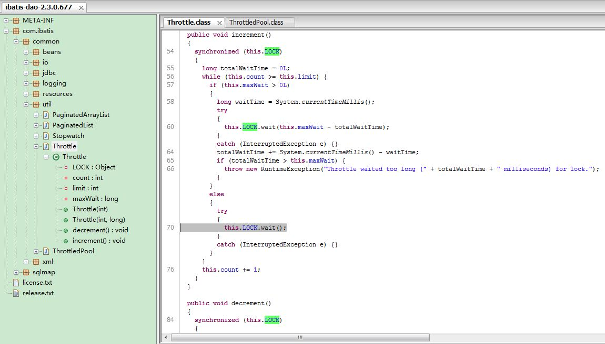
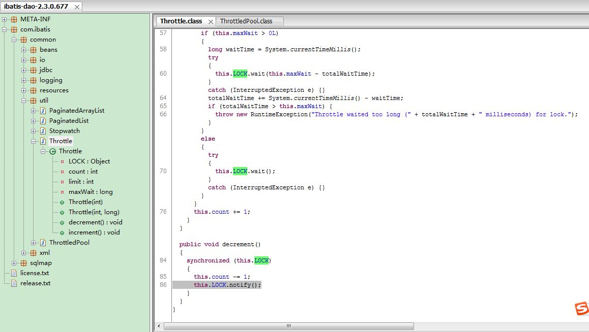
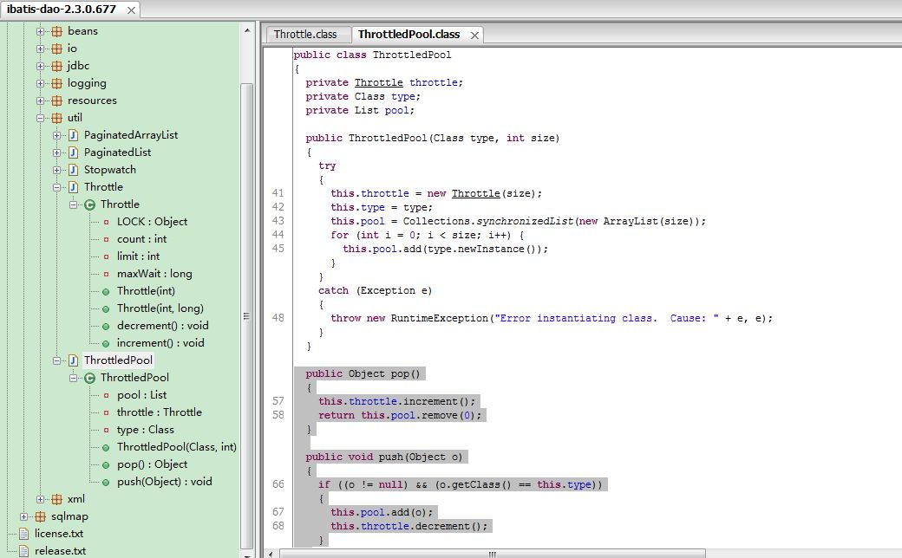

2016.6.7号，整个jso订单都不能下单，数据库的链接从4000降到几百， 只能重启所有的服务，并保留一个机器做thread dump。
重启后数据库链接涨到了2000多，下单基本能用。
运维开始以为是数据库超时引起的整个服务线程夯住，排查下来是ibatis流控的线程里没有做同步的通知（notify），导致所有的线程都lock在同一把锁上并做wait。
图1： thread dump中大量的WAITING (on object monitor)

图二： 线程wait

图三： 线程notify -- 没有做

图四： pop和push
解决方案： Throttle类是公司自己封装的ibatis版本，存在这个bug，估计是高并发的时候只调用了pop方法，其他线程还来不及调用push，所有的线程都夯住了。
解决这个问题很简单，升级ibatis版本到3.X.X。